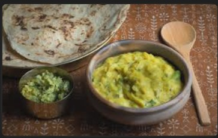
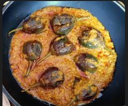
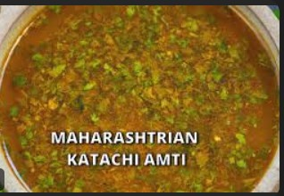

Nagpur's Famous Saoji Chicken
A fiery and flavorful chicken curry that's a specialty of Nagpur, made with our special Saoji Masala.
Ingredients:
- 1 kg chicken
- 3 tbsp Saoji Masala
- 2 onions, finely chopped
- 4 tomatoes, pureed
- 1 cup oil
- Fresh coriander for garnish
- Salt to taste
Method:
- Heat oil and sauté onions until golden brown
- Add Saoji Masala and cook for 2 minutes
- Add chicken and cook until tender
- Add tomato puree and simmer for 20 minutes
- Garnish with fresh coriander
Tips:
- Use bone-in chicken for authentic taste
- Don't reduce the oil quantity
- Serve hot with rice or roti

Zunka Pithla
A comforting gram flour curry with our special Pithla Masala, a staple in Maharashtrian homes.
Ingredients:
- 1 cup gram flour (besan)
- 2 tbsp Pithla Masala
- 2 onions, finely chopped
- 4 green chilies
- Fresh coriander
- 2 tbsp oil
- 1 tsp mustard seeds
Method:
- Mix gram flour with water to make a smooth paste
- Heat oil and add mustard seeds
- Add onions and green chilies
- Add Pithla Masala and cook briefly
- Pour in gram flour mixture and cook until thick
Tips:
- Keep stirring to avoid lumps
- Cook until oil separates
- Serve hot with bhakri or rice

Bharli Vangi
Stuffed brinjal curry with our special Masala, a traditional Maharashtrian delicacy.
Ingredients:
- 8 small brinjals
- 2 tbsp Bharli Vangi Masala
- 1 cup peanuts, roasted
- 2 onions, finely chopped
- Fresh coriander
- 2 tbsp oil
- Jaggery to taste
Method:
- Make cross cuts in brinjals
- Stuff with Bharli Vangi Masala and peanuts
- Heat oil and sauté onions
- Add stuffed brinjals and cook until tender
- Add jaggery and simmer for 5 minutes
Tips:
- Choose small, firm brinjals
- Don't overcook the brinjals
- Serve hot with bhakri or rice

Masala Amti
A tangy and spicy dal with our special Amti Masala, a perfect comfort food.
Ingredients:
- 1 cup toor dal
- 2 tbsp Amti Masala
- 1 cup tamarind water
- 2 green chilies
- Fresh coriander
- 2 tbsp oil
- Jaggery to taste
Method:
- Cook toor dal until soft
- Heat oil and add Amti Masala
- Add tamarind water and bring to boil
- Add cooked dal and simmer
- Finish with jaggery and coriander
Tips:
- Balance sweet and sour flavors
- Don't make it too thick
- Serve hot with rice